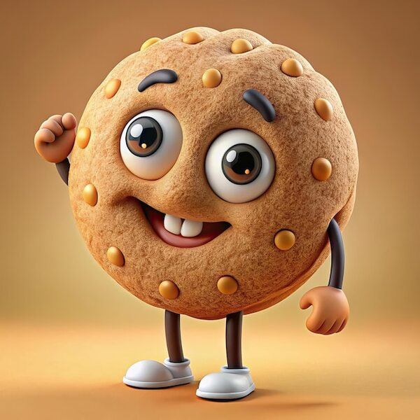

Interactive Button
Interactive Paragraph
jQuery makes it possible to add interactive effects to webpages. Double-click this paragraph to see what happens!
Interactive Image

Move your mouse over the image to see jQuery move and resize it.
jQuery Selectors Used
- #changeButton
- The ID selector targets the button with the ID "changeButton". jQuery uses this selector to attach a click event to the button.
- #buttonResult
- The ID selector targets the paragraph with the ID "buttonResult". jQuery uses this selector to change the text after the button is clicked.
- #interactiveParagraph
- The ID selector targets the paragraph with the ID "interactiveParagraph". jQuery uses this selector to respond to a double-click and change its appearance.
- #interactiveImage
- The ID selector targets the image with the ID "interactiveImage". jQuery uses this selector to respond when the mouse moves over or away from the image.
- #imageResult
- The ID selector targets the paragraph with the ID "imageResult". jQuery uses it to describe what happens during the image interaction.